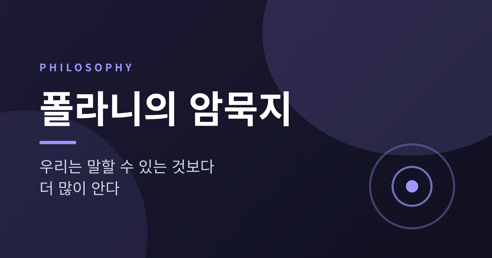
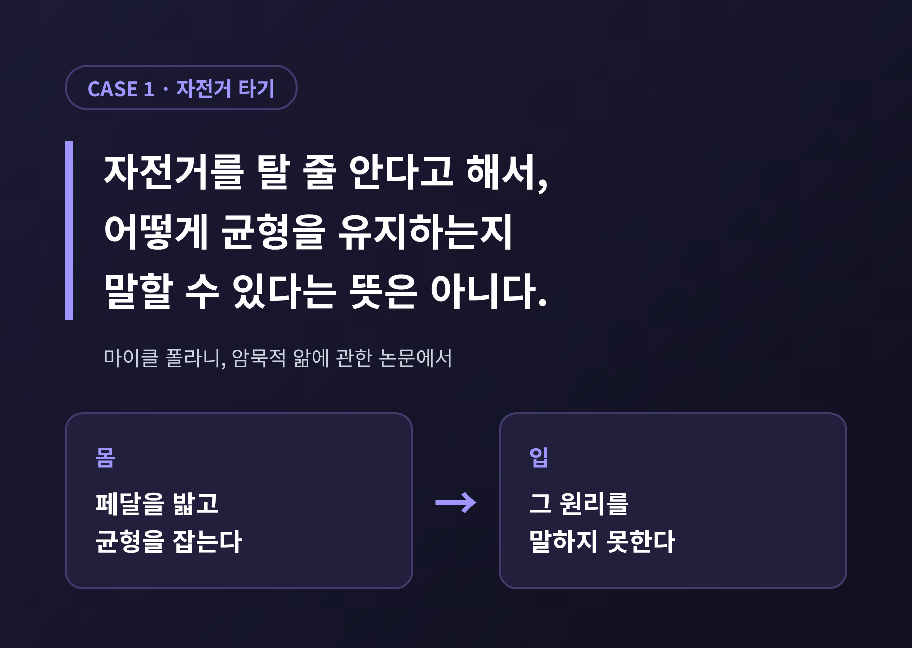
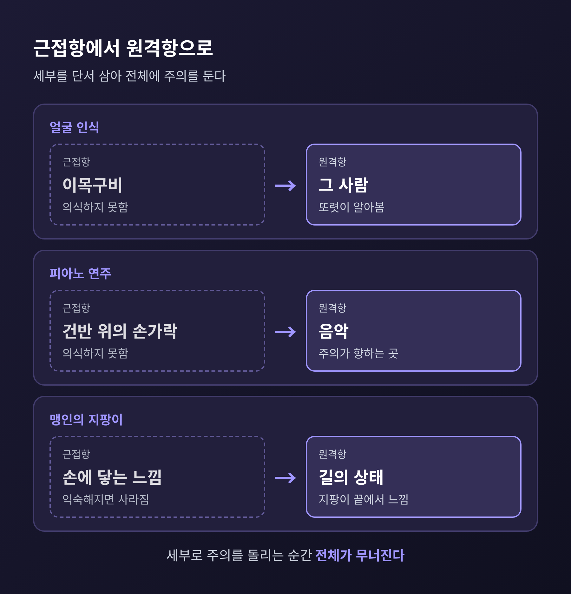
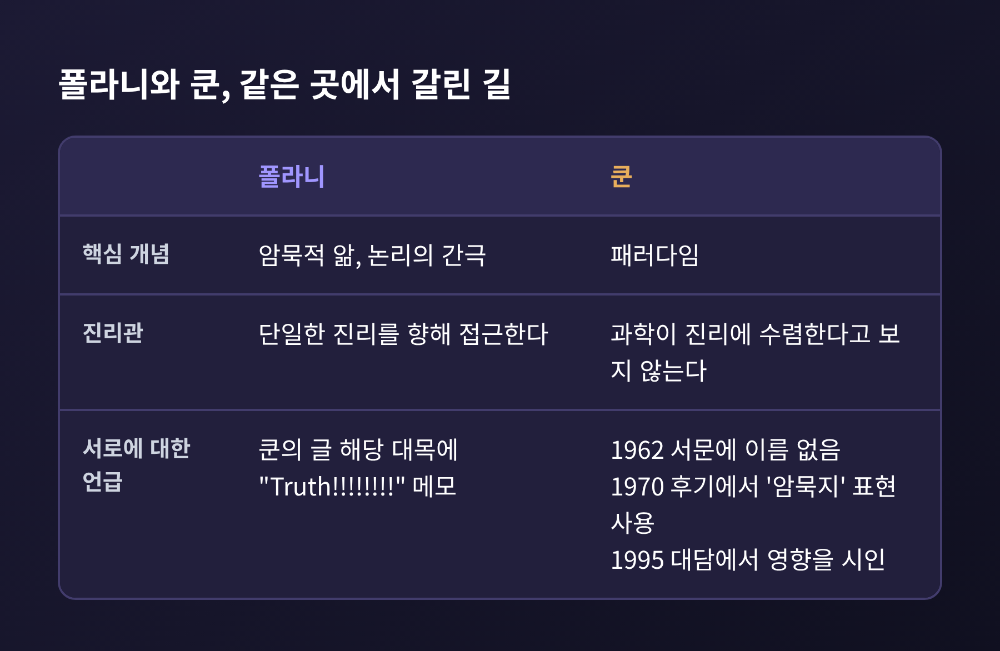
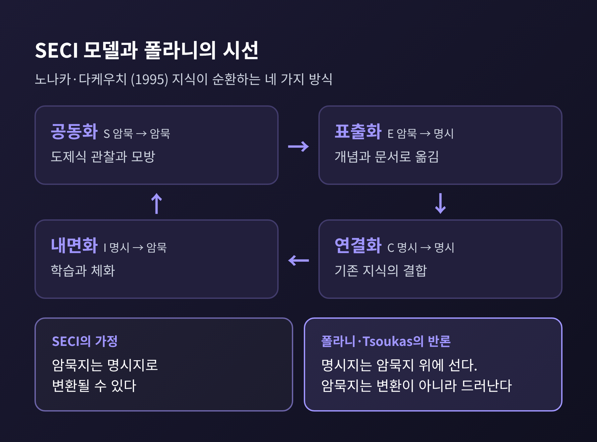
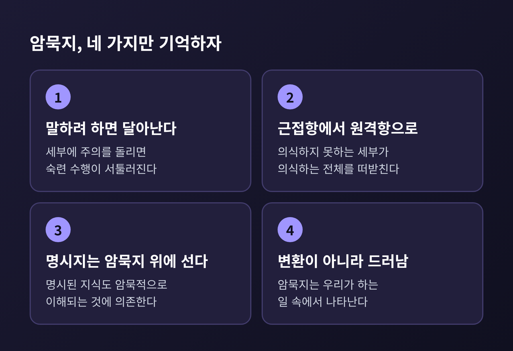

오늘은 마이클 폴라니의 암묵지에 대해 이야기해 보려 합니다. 핵심은 우리가 말로 옮길 수 있는 것보다 더 많은 것을 알고 있다는 한 문장입니다. 아래에서 그 구조와 사례, 과학철학에 미친 영향, 흔히 오해되는 지점을 차례로 정리합니다.
자전거를 탈 줄 아십니까. 그렇다면 어떻게 넘어지지 않는지 설명해 보시기 바랍니다.
대부분 막힙니다. 폴라니는 이 상황을 정면에서 다뤘습니다. 그는 자전거나 수영을 할 줄 안다고 해서, 어떻게 균형을 유지하는지 말할 수 있다는 뜻은 아니라고 적었습니다.
폴라니는 한 걸음 더 나아가 규칙의 형태까지 제시했습니다. 곡선의 반지름이 속도의 제곱에 비례하고 불균형의 정도에 반비례한다는 것입니다. 그러나 페달을 밟는 사람은 이 규칙을 규칙으로서 알지 못한 채 따릅니다. 몸은 아는데 입은 모르는 셈입니다.
덧붙일 점이 있습니다. 이 물리 공식 자체는 논쟁거리입니다. 도일(Doyle)은 1988년에 앞바퀴가 가려는 방향의 반대쪽으로 순간적으로 틀어진 뒤에 돈다고 보고했습니다. 폴라니의 설명이 틀렸을 수도 있다는 뜻입니다. 그래도 요점은 흔들리지 않습니다. 타는 사람이 자신이 쓰는 원리를 말하지 못한다는 사실은 그대로이기 때문입니다.

마이클 폴라니는 1891년 부다페스트에서 태어나 1976년 영국에서 세상을 떠났습니다. 출발점은 철학이 아니라 물리화학이었습니다. 결정 구조와 반응 속도를 연구했고, 나치가 집권하자 영국으로 건너갔습니다.
맨체스터대에서 1933년부터 물리화학 교수로 일하다가 1948년에 사회과학 교수로 자리를 옮겼습니다. 바이마르 독일의 초인플레이션과 실업을 지켜본 경험이 경제학으로 눈을 돌리게 했다고 전해집니다. 이후 관심은 점점 철학, 그중에서도 앎의 문제로 모였습니다.
1951~52년에 애버딘에서 기퍼드 강연을 했고, 이를 고쳐 『개인적 지식』(1958)으로 냈습니다. 이어 1962년 예일대 테리 강연을 바탕으로 『암묵적 차원』(1966)을 펴냈습니다. 두 책에서 그는 과학조차 기계적인 방법만으로 진리에 닿지 못하며, 모든 앎에는 개인적 판단이 들어간다고 주장합니다. 과학자 출신이 과학의 뿌리를 다시 묻는 책이었습니다.
폴라니는 암묵적 앎이 하나의 구조를 가진다고 보았습니다. 두 항이 있습니다. 가까운 쪽이 근접항, 먼 쪽이 원격항입니다. 우리는 근접항을 단서 삼아 원격항에 주의를 둡니다. 원격항은 또렷이 의식하지만 근접항은 의식하지 못합니다.
같은 구조를 폴라니는 부수적 앎에서 초점적 앎으로 향한다고도 표현했습니다. 세부 요소를 하나하나 보지 않고 그것이 가리키는 전체를 본다는 뜻입니다. 폴라니 자신은 이 구조를 가장 중요한 발견으로 여겼다고 합니다.
얼굴 인식이 대표적입니다. 폴라니는 사람에 대해 우리가 줄 수 있는 어떤 묘사도 대개 다른 수백만 명에게 똑같이 들어맞는다고 썼습니다. 그런데도 우리는 익숙한 얼굴을 군중 속에서 단번에 알아봅니다. 이목구비를 따로 떼어 보지 않고 전체로 보기 때문입니다. 이때 근접항은 얼굴의 세부 특징이고, 원격항은 알아보는 그 사람입니다.
피아노도 같습니다. 손가락이 근접항이고 음악이 원격항입니다. 건반 위의 손가락에 주의를 옮기는 순간 연주는 서툴러집니다. 맹인이 쓰는 지팡이도 마찬가지입니다. 처음에는 손에 부딪히는 느낌이 의식되지만, 익숙해지면 손의 감각은 사라지고 지팡이 끝에 닿는 길이 느껴집니다.
여기서 중요한 대목이 나옵니다. 세부에 주의를 돌리면 전체가 무너집니다. 그래서 암묵지는 말하려 할수록 달아납니다.

폴라니는 과학 발견을 엄밀한 논리의 산물로 보지 않았습니다. 논리의 간극을 건너는 일이며, 그 다리는 학계 공동체 안의 도제식 훈련으로 쌓은 숙련과 판단이라고 보았습니다. 철학자 툴민은 이런 설명이 과학철학의 지나친 주지주의적 설명을 녹여 없애는 데 도움이 된다고 평했습니다.
흔히 거론되는 인물이 토머스 쿤입니다. 위키피디아는 폴라니의 과학 실천론이 쿤과 파이어아벤트에게 영향을 주었다고 정리합니다. 다만 쿤 본인의 태도는 조심스러웠습니다. 1962년 『과학혁명의 구조』에서 폴라니가 매우 비슷한 주제를 다뤘다고 언급했으나, 서문에는 이름이 없습니다. 1970년 후기에서는 '암묵지'를 폴라니의 유용한 표현이라 부르며 절 제목으로 삼았습니다. 1995년 대담에서는 집필 중 『개인적 지식』을 일부러 읽지 않았다고 하면서도 폴라니가 분명히 영향을 주었다고 말했습니다.
두 사람은 진리를 두고 갈렸습니다. 쿤은 패러다임이 바뀐다고 과학이 진리에 가까워지는 것은 아니라고 보았습니다. 폴라니는 쿤의 글 그 대목에 "Truth!!!!!!!! This really needs analysis"라고 적었다고 전해집니다. 폴라니는 끝까지 과학적 실재론자였습니다. 그에게 암묵지는 상대주의의 근거가 아니라, 숨은 실재와 접촉하려는 개인의 헌신이었습니다.

암묵지는 경영학에서 더 유명해졌습니다. 노나카 이쿠지로가 1990년 무렵 발전시키고 다케우치 히로타카와 함께 1995년 『지식창조기업』으로 펴낸 SECI 모델 덕분입니다. 이 모델은 지식이 네 가지 방식으로 바뀌며 나선처럼 순환한다고 봅니다.
매력적인 모델입니다. 그러나 폴라니 연구자들은 여기에 이견을 냅니다. 스티븐 굴레이(Gourlay)는 폴라니에게 지식이 대상이 아니라 앎의 과정이었다고 짚습니다. 또 폴라니는 명시적 지식이 암묵적으로 이해되는 것에 의존한다고 보았습니다. 형식지는 암묵지가 변신한 결과물이 아니라, 암묵지 위에 올라선 것입니다. 노나카 모델은 암묵지가 완전히 변환될 수 있다고 가정하는 셈입니다.
Tsoukas(2003)의 정리가 가장 선명합니다. 그는 암묵지는 포착되거나 번역되거나 변환되는 것이 아니라, 우리가 하는 일 속에서 드러날 뿐이라고 썼습니다. 새로운 지식은 암묵이 명시로 바뀔 때가 아니라, 사회적 상호작용을 통해 숙련된 실천을 다시 나누어 볼 때 생긴다는 것입니다. 이럴 때 필요한 것은 번역이 아니라 "이걸 보세요", "이렇게 해 보세요" 같은 지시적 대화입니다.
한계도 짚어 두겠습니다. 비판 쪽 자료가 압도적이어서, 노나카 측의 반론은 이번 조사에서 직접 확인하지 못했습니다. 노나카의 암묵성에 일본 조직 특유의 암시성이 섞여 있다는 지적(Li와 Gao, 2003)과 사례 대부분이 일본 제조업체라는 점도 함께 알려져 있습니다. 노나카 모델은 조직 현장을 위한 실용 모델이고, 폴라니의 원래 뜻과는 다른 도구로 읽는 편이 공정하다고 생각합니다.
해리 콜린스는 암묵지를 세 갈래로 나눴습니다. 사람 사이의 사정으로 말해지지 않는 관계적 암묵지, 자전거처럼 몸과 뇌의 성질에 묶인 신체적 암묵지, 언어 규칙처럼 사회에 깃든 집합적 암묵지입니다. 앞의 둘은 원리상 명시 가능성이 열려 있으나 셋째는 명시할 길을 상상하기 어렵다고 합니다.

폴라니의 한 문장은 2014년에 다시 불려 나왔습니다. 경제학자 데이비드 오터가 NBER 워킹페이퍼에서 '폴라니의 역설'이라는 이름을 붙였기 때문입니다. 기계에 일을 시키려면 규칙을 적어 줘야 하는데, 사람이 아는 것은 적을 수 있는 것보다 많다는 문제입니다. 오터는 일자리가 고학력·고임금과 저학력·저임금 양쪽에서 늘고 중간이 줄어드는 양극화를 이 역설의 한 표현으로 보았습니다.
예전엔 이 역설이 기계의 한계선이었습니다. 지금은 학습하는 기계가 그 선을 흔들고 있습니다. 기계가 사람의 사례에서 말해지지 않은 규칙을 스스로 추론하기 때문입니다. 2016년 알파고가 이세돌에게 4대 1로 이긴 것이 자주 인용되는 예입니다. 기계는 사람과 같은 방법이 아니라 같은 결과만 내면 된다는 반론도 있습니다.
반대편에는 모라벡의 역설이 있습니다. 걷기나 얼굴 인식처럼 쉬워 보이는 지각·운동 기능이 고급 추론보다 컴퓨터에 어렵다는 관찰입니다. 핑커는 이를 어려운 문제는 쉽고 쉬운 문제는 어렵다고 요약했습니다.
어느 쪽이 맞는지는 아직 열려 있습니다. 확실한 것은 하나입니다. 폴라니가 60년 전에 짚은 질문이, 앎이란 무엇인가라는 질문이 이제 기술 논쟁의 한가운데에 있다는 것입니다.
정리하면 이렇습니다. 암묵지는 아직 말해지지 않은 지식이 아닙니다. 말하려 하면 오히려 무너지는 앎의 한 층입니다.
"우리는 말할 수 있는 것보다 더 많이 안다."
자전거를 타는 몸, 얼굴을 알아보는 눈, 건반 위의 손가락이 그 증거입니다. 그렇다고 말이 쓸모없다는 뜻은 아닙니다. 말은 그 앎을 다른 사람의 주의로 이끄는 손짓에 가깝습니다. 오늘 아침에 별생각 없이 해낸 일 가운데 설명해 보라고 하면 막힐 일은 몇 가지나 될까요. 그 목록이 곧 당신의 암묵지입니다.
